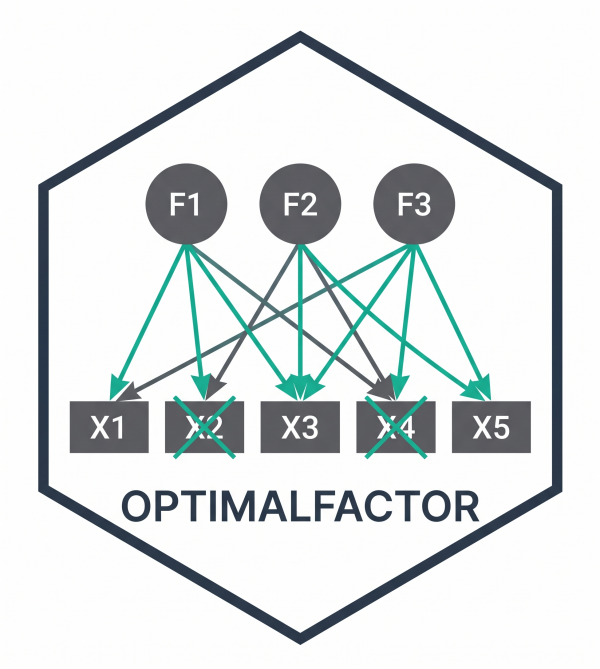

Console Report for EFA Optimization Results
report_efa_results.RdPrints a compact, Spanish-language console report summarizing the iterative optimization performed by efa_boosting.
The report includes a process summary table, three independent ASCII evolution plots (RMSEA, SRMR, CFI), a stepwise removal log, the final thresholded loading structure, and common fit indices with rule-of-thumb interpretations.
Designed for quick inspection in interactive sessions; returns invisible(NULL).
Arguments
- res
A result list as returned by
efa_boosting, expected to contain:$final_structure: data frame of thresholded factor loadings and item labels.$removed_items: character vector of removed items in order.$steps_log: data frame with columnsstep,removed_item,reason, and-if available-rmsea,srmr,cfi.$final_rmsea: final scaled RMSEA.$iterations: number of iterations executed.$bondades_original: fit indices (columns:chisq.scaled,df.scaled,rmsea.scaled,cfi.scaled,tli.scaled,srmr).$inter_factor_correlation: optional factor correlation matrix.$interfactor_check: optional list describing correlation-threshold checks.
- show_plot
Logical; if
TRUE, prints three ASCII evolution bars (RMSEA, SRMR, CFI).Logical; if
TRUE(default), the formatted report is printed to the console. IfFALSE, the structured report object is returned without printing.
Details
Headers and language. All headings and labels are printed in Spanish (e.g., “RESUMEN DEL PROCESO”, “EVOLUCIÓN DEL RMSEA”, “EVOLUCIÓN DEL SRMR”, “EVOLUCIÓN DEL CFI”, “ÍNDICES DE AJUSTE DEL MODELO FINAL”).
Process summary. The function computes and prints:
Initial item count (
n_initial) and final count (n_final).Percent retained.
Initial and final RMSEA.
Percent reduction in RMSEA.
Iterations executed.
These appear in a compact two-column table.
ASCII evolution plots (RMSEA, SRMR, CFI).
When show_plot = TRUE, the function prints three separate bar-style ASCII diagnostics:
RMSEA evolution: bar length increases with RMSEA, scaled to the reference range 0.05–0.13.
SRMR evolution: bar length increases with SRMR, scaled to 0.03–0.10.
CFI evolution: bar length increases with CFI (higher = better), scaled linearly between 0.70 and 1.00.
Each block includes an ASCII axis guide:
RMSEA: ticks at 0.05, 0.08, 0.10, 0.13.
SRMR: ticks at 0.03, 0.05, 0.08, 0.10.
CFI: ticks at 0.70, 0.80, 0.90, 0.95, 1.00.
Bars are drawn using a full block and capped at a configurable length (default: 20 characters).
Item removal log.
The stepwise elimination table mirrors steps_log, formatting available fit indices (RMSEA, SRMR, CFI) to three decimals.
Final structure.
Prints the thresholded loading matrix produced by efa_boosting (loadings < 0.30 appear as 0).
Final fit indices and qualitative labels.
Extracts the last row of bondades_original and prints:
Scaled \(\chi^2\), scaled df, RMSEA, CFI, TLI, and SRMR.
Quick qualitative labels:
RMSEA:
<= .05 = Excelente,<= .08 = Bueno,<= .10 = Mediocre, elsePobre.CFI/TLI:
>= .95 = Excelente,>= .90 = Bueno, elsePobre.SRMR:
<= .08 = Bueno, elsePobre.
These labels are intended for rapid screening and should be interpreted in context.
Unicode.
The report uses UTF-8 box characters (a full block) and accented text. If your console lacks UTF-8 support, glyphs may degrade.
Examples
# \donttest{
data(Data_Expectativas)
res <- efa_boosting(
data = Data_Expectativas,
name_items = "EAF",
n_factors = 2,
verbose = FALSE
)
#> Boosting iter 1: 10 items activos, 0 eliminados hasta ahora
#> Warning: lavaan->lav_model_vcov():
#> The variance-covariance matrix of the estimated parameters (vcov) does not
#> appear to be positive definite! The smallest eigenvalue (= -1.201524e-16)
#> is smaller than zero. This may be a symptom that the model is not
#> identified.
#> Warning: lavaan->lav_model_vcov():
#> The variance-covariance matrix of the estimated parameters (vcov) does not
#> appear to be positive definite! The smallest eigenvalue (= -2.509295e-17)
#> is smaller than zero. This may be a symptom that the model is not
#> identified.
#> Boosting iter 2: 9 items activos, 1 eliminados hasta ahora
#> Warning: lavaan->lav_model_vcov():
#> The variance-covariance matrix of the estimated parameters (vcov) does not
#> appear to be positive definite! The smallest eigenvalue (= -1.889844e-17)
#> is smaller than zero. This may be a symptom that the model is not
#> identified.
#> Warning: lavaan->lav_model_vcov():
#> The variance-covariance matrix of the estimated parameters (vcov) does not
#> appear to be positive definite! The smallest eigenvalue (= 3.444830e-17)
#> is close to zero. This may be a symptom that the model is not identified.
#> [iter 2] Greedy: evaluando 9 candidatos para mejorar el ajuste...
#> cand 1/9: probando sin 'EAF1'...
#> Warning: lavaan->lav_model_vcov():
#> The variance-covariance matrix of the estimated parameters (vcov) does not
#> appear to be positive definite! The smallest eigenvalue (= 1.350965e-17)
#> is close to zero. This may be a symptom that the model is not identified.
#> cand 2/9: probando sin 'EAF2'...
#> Warning: lavaan->lav_model_vcov():
#> The variance-covariance matrix of the estimated parameters (vcov) does not
#> appear to be positive definite! The smallest eigenvalue (= 2.675043e-17)
#> is close to zero. This may be a symptom that the model is not identified.
#> cand 3/9: probando sin 'EAF3'...
#> Warning: lavaan->lav_model_vcov():
#> The variance-covariance matrix of the estimated parameters (vcov) does not
#> appear to be positive definite! The smallest eigenvalue (= 7.644142e-17)
#> is close to zero. This may be a symptom that the model is not identified.
#> cand 4/9: probando sin 'EAF4'...
#> Warning: lavaan->lav_model_vcov():
#> The variance-covariance matrix of the estimated parameters (vcov) does not
#> appear to be positive definite! The smallest eigenvalue (= 4.558963e-18)
#> is close to zero. This may be a symptom that the model is not identified.
#> cand 5/9: probando sin 'EAF5'...
#> Warning: lavaan->lav_model_vcov():
#> The variance-covariance matrix of the estimated parameters (vcov) does not
#> appear to be positive definite! The smallest eigenvalue (= 4.024153e-17)
#> is close to zero. This may be a symptom that the model is not identified.
#> Warning: lavaan->lav_object_post_check():
#> some estimated ov variances are negative
#> Warning: lavaan->lav_object_post_check():
#> some estimated ov variances are negative
#> Warning: lavaan->lav_object_post_check():
#> some estimated ov variances are negative
#> cand 6/9: probando sin 'EAF6'...
#> Warning: lavaan->lav_model_vcov():
#> The variance-covariance matrix of the estimated parameters (vcov) does not
#> appear to be positive definite! The smallest eigenvalue (= 5.021168e-16)
#> is close to zero. This may be a symptom that the model is not identified.
#> Warning: lavaan->lav_object_post_check():
#> some estimated ov variances are negative
#> Warning: lavaan->lav_object_post_check():
#> some estimated ov variances are negative
#> Warning: lavaan->lav_object_post_check():
#> some estimated ov variances are negative
#> cand 7/9: probando sin 'EAF8'...
#> Warning: lavaan->lav_model_vcov():
#> The variance-covariance matrix of the estimated parameters (vcov) does not
#> appear to be positive definite! The smallest eigenvalue (= -3.022502e-17)
#> is smaller than zero. This may be a symptom that the model is not
#> identified.
#> cand 8/9: probando sin 'EAF9'...
#> Warning: lavaan->lav_model_vcov():
#> The variance-covariance matrix of the estimated parameters (vcov) does not
#> appear to be positive definite! The smallest eigenvalue (= -2.944919e-18)
#> is smaller than zero. This may be a symptom that the model is not
#> identified.
#> cand 9/9: probando sin 'EAF10'...
#> Warning: lavaan->lav_model_vcov():
#> The variance-covariance matrix of the estimated parameters (vcov) does not
#> appear to be positive definite! The smallest eigenvalue (= 7.873810e-17)
#> is close to zero. This may be a symptom that the model is not identified.
#> Boosting iter 3: 8 items activos, 2 eliminados hasta ahora
#> Warning: lavaan->lav_model_vcov():
#> The variance-covariance matrix of the estimated parameters (vcov) does not
#> appear to be positive definite! The smallest eigenvalue (= -2.039337e-17)
#> is smaller than zero. This may be a symptom that the model is not
#> identified.
#> Warning: lavaan->lav_model_vcov():
#> The variance-covariance matrix of the estimated parameters (vcov) does not
#> appear to be positive definite! The smallest eigenvalue (= 1.350965e-17)
#> is close to zero. This may be a symptom that the model is not identified.
report_efa_results(res, show_plot = TRUE)
#>
#> ─────────────────────────────────────────────────────────────────
#> ANÁLISIS FACTORIAL EXPLORATORIO - REPORTE DE OPTIMIZACIÓN
#> ─────────────────────────────────────────────────────────────────
#>
#> RESUMEN DEL PROCESO
#>
#> Metrica Valor
#> Items iniciales 10
#> Items finales 8
#> Items eliminados 2
#> % Retenido 80%
#> RMSEA inicial 0.088
#> RMSEA final 0.069
#> Reduccion RMSEA 21.6%
#> Iteraciones 2
#>
#>
#> EVOLUCIÓN DEL RMSEA
#>
#> Paso 0 [0.088] █████████
#> Paso 1 [0.088] █████████
#> Paso 2 [0.069] █████
#> └─────┴─────┴─────┴─────┘
#> 0.05 0.08 0.10 0.13
#>
#>
#> EVOLUCIÓN DEL SRMR
#>
#> Paso 0 [0.042] ███
#> Paso 1 [0.042] ███
#> Paso 2 [0.034] █
#> └─────┴─────┴─────┴─────┘
#> 0.03 0.05 0.08 0.10
#>
#>
#> EVOLUCIÓN DEL CFI
#>
#> Paso 0 [0.989] ███████████████████
#> Paso 1 [0.989] ███████████████████
#> Paso 2 [0.995] ████████████████████
#> └─────┴─────┴─────┴─────┴─────┘
#> 0.70 0.80 0.90 0.95 1.00
#>
#>
#> DETALLE DE ELIMINACIÓN DE ÍTEMS
#>
#> step removed_item reason rmsea srmr cfi
#> 1 EAF7 Cross-loading (priority) 0.088 0.042 0.989
#> 2 EAF1 Composite fit 0.069 0.034 0.995
#>
#>
#> ESTRUCTURA FACTORIAL FINAL (cargas > 0.30)
#>
#> Items f1 f2
#> 1 EAF6 0.8488690 0.0000000
#> 2 EAF3 0.7337100 0.0000000
#> 3 EAF5 0.6924949 0.0000000
#> 4 EAF9 0.0000000 0.9562016
#> 5 EAF8 0.0000000 0.9091470
#> 6 EAF10 0.0000000 0.8093821
#> 7 EAF4 0.0000000 0.6706327
#> 8 EAF2 0.0000000 0.6649135
#>
#>
#> ÍNDICES DE AJUSTE DEL MODELO FINAL
#>
#> Indice Valor Interpretacion
#> Chi-cuadrado escalado 19.08
#> gl 13
#> RMSEA 0.069 Bueno
#> CFI 0.995 Excelente
#> TLI 0.990 Excelente
#> SRMR 0.034 Bueno
#>
#>
#> CORRELACIONES INTER-FACTORIALES (PHI)
#>
#> f1 f2
#> f1 1.000
#> f2 0.568 1.000
#>
#> [OK] Criterio de correlacion minima cumplido (todas >= 0.32)
#> Minima encontrada: 0.568
#>
#> ─────────────────────────────────────────────────────────────────
rep <- report_efa_results(res, print = FALSE)
names(rep)
#> [1] "type" "summary"
#> [3] "steps_log" "final_structure"
#> [5] "fit_indices" "inter_factor_correlation"
#> [7] "interfactor_check" "removed_items"
#> [9] "text"
# }